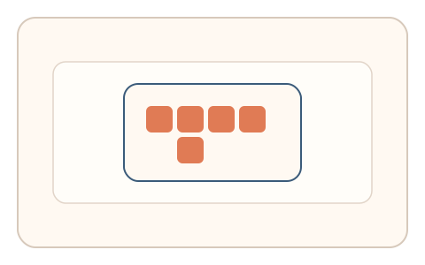
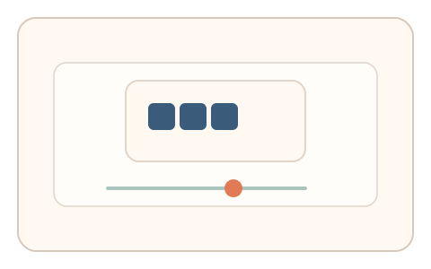
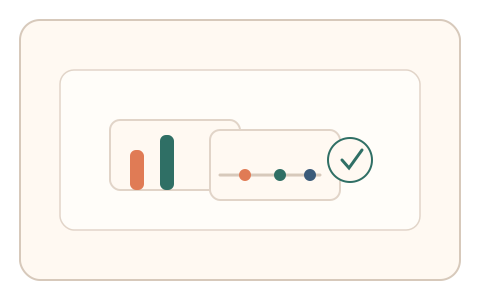

#109
Morphological Analysis - Combination Batches
已扩展
全局‑局部切换门槛
在 Navon 图形中先选全局/局部，再调节切换阈值，以反应时与阈值位置验证真实性。
概念原文
Navon 图形要求先选全局/局部，再调节切换阈值，系统比较两步反应时与阈值位置。任务结构为多阶段，信号形态为反应时与阈值调节。
把“知觉优先偏置”转化为可测阈值。
研究背景
Navon 图形会触发全局‑局部知觉偏置，切换阈值反映个体对局部与全局的偏好与处理门槛。两阶段测量可形成稳定信号。
核心机制
- 呈现 Navon 图形并要求选择全局或局部。
- 进入切换阈值滑杆微调。
- 记录反应时与阈值位置。
- 进行任务内相对比较判定。
用户流程
- 步骤 1：用户选择全局/局部目标。
- 步骤 2：用户调节切换阈值。
- 步骤 3：系统比较反应时与阈值并判定。
判定信号
全局‑局部反应时
知觉偏置会影响选择速度。
切换阈值位置
阈值反映全局‑局部优先级。
判定逻辑
反应时与阈值需落在人类分布区间且相对关系合理；无偏置或过度一致判异常。
对抗面
- 脚本直接选择并固定阈值
- 重放真实用户的反应时序列
防御与缓解
- 随机化 Navon 字母与布局
- 动态调整阈值范围与起点
- 叠加轨迹与停顿信号
可达性与风险
提供更大字号与慢速模式，必要时提供替代任务。
- 视觉障碍用户难以区分全局‑局部
- 设备分辨率影响识别
可视化状态

状态 1：全局‑局部选择
Navon 图形选择全局或局部。

状态 2：阈值微调
调节全局‑局部切换阈值。

状态 3：门槛判定
比较反应时与阈值位置。
参考资料
Navon figure
说明全局‑局部知觉偏置。
Global precedence
说明全局优先效应与切换特性。